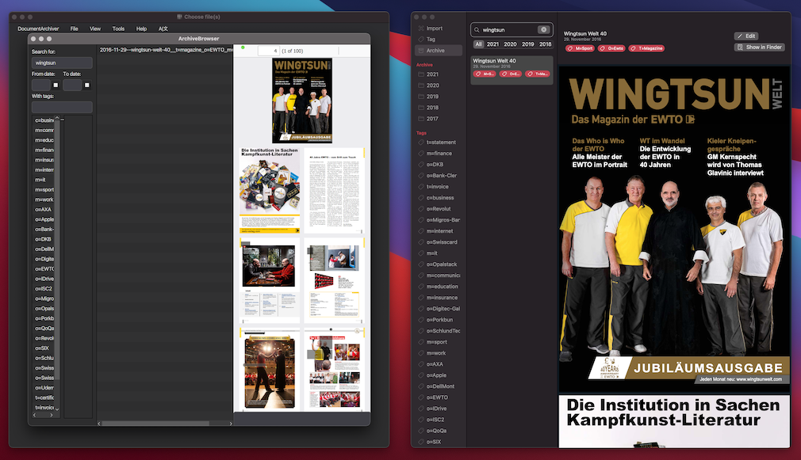

Love it?
If you love Document Archiver and would like to support its further development, every little support is appreciated üôèüèªüòä
Support Document Archiver on Ko-fi
Like (upvote) Document Archiver on Product Hunt

Document Archiver and PDF Archiver can work with the same archiving folders. Here is how.

As mentioned on the Homepage, Document Archiver is build on the same filename patterns and folder structures as PDF Archiver.
This may rise the question: Can both apps use the same archiving folders, so one does not have to deal with multiple archives?
The answer is: Yes! And as a consequence PDFs archived in Document Archiver can be viewed in PDF Archiver and vice versa.
By default Document Archiver will archive PDF files within a subfolder of "DocumentArchiver", which resides in a folder "Documents" within your home directory:
└── ~/Documents/DocumentArchiver/pdfs
└── #Year#
└── #Date#--#Description#__#Tags#.#Suffix#
PDF Archiver will archive its PDFs within an iCloud folder:
└── ~/Library/Mobile Documents/iCloud~de~JulianKahnert~PDFArchiver/Documents
└── #Year#
└── #Date#--#Description#__#Tags#.#Suffix#
Combining the two is as easy as setting a symbolic link :-)
1.) If you already have archived PDF files with Document Archiver, move the content of "~/Documents/DocumentArchiver/pdfs" to "~/Library/Mobile Documents/iCloud~de~JulianKahnert~PDFArchiver/Documents" and afterwards delete the folder "pdfs".
2.) In a terminal window, change to Document Archiver's archive directory:
cd ~/Documents/DocumentArchiver/3.) Create a symbolic link to PDF Archiver's iCloud directory:
ln -s ~/Library/Mobile\ Documents/iCloud~de~JulianKahnert~PDFArchiver/Documents/ pdfsDone! Both applications will now archive PDFs in the same folder.
If you love Document Archiver and would like to support its further development, every little support is appreciated üôèüèªüòä